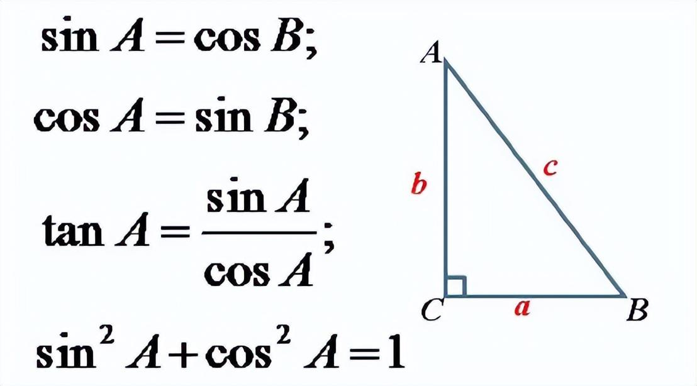
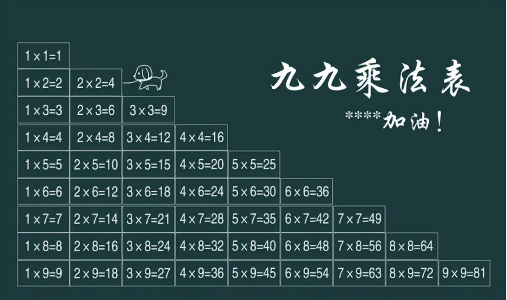
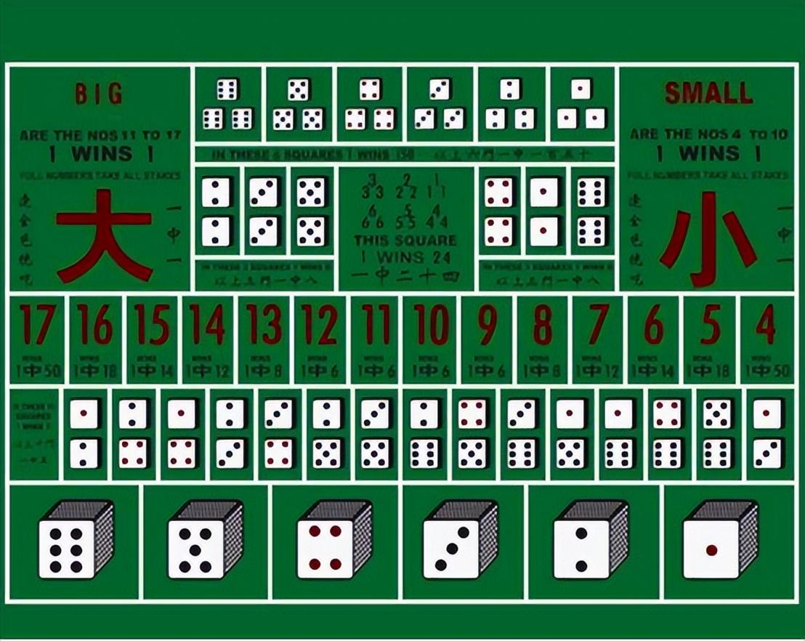

转载来源
- 原文： 《这，就是数学》
- 作者：刘润
0x00 前言
请原谅我今天，冒昧地拉着你聊这个话题 —— 数学。
数学这个话题，是我一直想分享，但又不敢分享的。
为什么？
因为，它太难了。
这两个字，简直就是一个抽象扭曲的魔鬼。甚至，有同学在报考大学专业的时候说，只要不学数学，选什么专业都行！
我理解。我明白。
可是，对大部分人来说，学数学，不是为了解开数学题，不是为了当数学家，而是为了培养数学思维。
数学思维，不仅能让你登上更高的高度，开拓你的眼界，也能够帮你建立一些正确的常识，让你少走一些弯路，并且让你在人生的每一个岔路口，有更多更多的选择。
今天我能够给企业做战略咨询，能够快速洞察一件事物的本质，其实，最最根本的能力，就来自于数学思维。
可是，数学还是太难了，我学不会怎么办？
解数学题也许很难，数学考试拿满分也许很难，但是，只要你愿意，培养自己的数学思维其实并不难。
今天的文章会有些长，内容有点多，但我会尽可能地用我绵薄的知识，把它讲得更好玩一些。
相信我，坚持看完，你会有一些小启发的。
0x01 数学，逻辑的产物
什么？你还是抵触？为什么要抵触？
好吧。我试着猜猜，你看看是不是这么回事。
很多人学了十几年的数学，一离开学校，根本不知道数学到底有什么用。
语文，也很难学。但学好语文，起码能写出动人的情书。
英语，还是很难学。但学好英语，起码出国旅游的时候不需要请翻译。
数学…我一直觉得数学挺简单的，加减乘除。
直到…三角函数出现在我生命里的那一天。

自打 sin 和 cos 出现起，老师不再亲切了，课本变成天书了，我的世界也开始变得灰暗了。谁能告诉我，学这些三角函数有什么用？我保证以后不碰三角形的物体还不行吗？
为何数学恐怖如斯？
不妨试着想象一下，数学，就是一座高楼大厦。
那，这座大厦是怎么一步一步被搭建起来的呢？
你看，数学的世界里，有很多的公理。
比如说，任意两个点可以通过一条直线连接；任意线段能无限延长成一条直线；给定任意线段，可以以其一个端点作为圆心，该线段作为半径做一个圆；所有直角都全等；若两条直线都与第三条直线相交，并且在同一边的内角之和小于两个直角和，则这两条直线在这一边必定相交。
头都晕了！
但你可能已经想到了。是的，这是欧氏几何的5条基本公理。
从这5条公理出发，用纯逻辑推理的方法，可以推导出无数条定理。
比如说，每一条线的角度都是180度；三角形的内角和等于 180 度；过直线外的一点，有且只有一条直线和已知直线平行……
这就是一幢名叫欧氏几何的大厦。
你发现了吗？数学，本来就是逻辑的产物。
可如果，我从这幢大厦里，随机地抽出一块产物递给你呢？
这块产物原本是用来解决一个什么样的问题的？不知道。是从哪条公理推导出来的？也不知道。是怎么推导出来的？还是不知道。
不知道怎么办？
不需要知道，记下来就行了。可谁又能记下一整座大厦呀。
学的时候昏昏沉沉，考的时候自然天旋地转。
可是，你相信吗？
所有的数学，都是为了解决有趣的问题。
你不信？
我举个例子。
0x02 进制，是计数的智慧
先抛一个问题吧。
你知道，为什么计算机要用二进制吗？
好吧。这个问题可能有点简单。因为计算机的各个门电路，只有 “开” 和 “关” 两种状态。那就用 “0” 来表示关，用 “1” 来表示开。简单、方便。
既然这么简单，可为什么绝大部分的国家，到最后采用了十进制呢？
是为了解决计数的问题。
我今天采回了一批果子，和你们共享。你家分多少颗，他家分多少颗，这就得有个数。
怎么记这个数呢？用计算器吗？进制诞生的时候，不光是没有计算器，恐怕是连本子都没有。
那怎么办？
于是，拥有高等智慧的人类，不约而同地望向了自己的双手。
这十根手指，不就是天赐的计算器吗？分一颗，掰一根。分两颗，掰两根。
分十一颗…好吧，再掰一轮。
可是，既然十进制是天赐的宝物，为什么还有十二进制呢？
比如说，星座，是十二进制的。生肖，也是十二进制的。
为什么？是因为古代有一个特殊的种族，长了十二根手指吗？
那倒不是。其实答案，依然在你的手上。
如果，你不嫌弃的话，我想邀请你和我一起做这样的一套动作。
第一步，张开你的右手。
第二步，移动你的大拇指，放到食指最下面的指节上，并默念：1。然后向上移动你的大拇指，放到食指中间的指节上，并默念：2。再向上移动，并默念：3。
第三步，移动你的大拇指，放到中指最下面的指节上，并默念：4。
……
最终，你会成功地数到12。
怎么样？算出我的财运了吗？能和我说说吗？
不闹了。这就是十二进制。不是有人长了十二根手指头，而是因为有的人习惯掰手指，有的人习惯点指节。
那那那…为什么还有六十进制呢？
比如说，闹钟，是六十进制的。甲子纪年法，也是六十进制的。
不卖关子了。答案，仍然在你的手上。
有的人习惯掰手指，有的人习惯点指节。那把 “掰手指” 和 “点指节” 结合一下，就是六十进制了。
你看，用右手掰手指，能计五个数。用左手点指节，能计十二个数。
是的，你已经想到了。五乘以十二，就是六十。
你再猜猜，这个世界上，有没有二十进制呢？
当然。人类有双手双脚，共计二十个指头，当然也会有二十进制的计数法。据说，玛雅人用的就是二十进制。
至于二十进制为什么很少被使用的话…
大概是因为用脚计数不文明吧。
二进制，十进制，十二进制，六十进制，二十进制，都是为解决有趣的问题而生的。
想象一下，如果小学的数学老师，真的带着你掰了一节课的手指，你还会忘记这些知识吗？
我猜，不会的。因为你知道，那些数学公式，投射到现实世界里，到底是为了解决一个什么样的问题。
我再举个例子。
0x03 口算，是汉语的音律
也许，你觉得自己的数学成绩是一场灾难。
可你知道吗？和世界上其他国家的同学比起来，你有着得天独厚的优势。
为什么？
因为汉语，在帮你学数学。
看到这里，你可能会有点疑惑。学数学，和汉语有什么关系？
我举个例子。
如果你愿意的话，请口算一下，13 乘以 9，等于多少？
没错，是 117。
请问，你是怎么算出来的呢？
我猜猜看，是不是 “三九二十七”，“一九得九”，二十七加九十，得出的 117 ？巧了，我也是这么算的。
我想再问一个 “无聊” 的问题：这个 “三九二十七”，是哪来的？
来自一张流淌在血液里的表格 —— 九九乘法表。

是的。我和你一样，也背过这张九九乘法表。我们今天所拥有的口算能力，都建立在这张表的基础之上。
可是你知道吗？如果你在一些外国友人的面前，通过口算得出了 13 乘以 9 等于 117，他会像看神仙一样看着你的。
为什么？因为在这个世界上的很多国家，是没有九九乘法表的。
没有九九乘法表？那怎么口算？
挺新奇的。我试着讲给你听。
比如说，古埃及人。
很久很久以前，古埃及人还生活在国王的统治之下。耕田种地，那是要交税的。
怎么交？
按土地面积交。横着走 13 步，竖着走 9 步，就是这块土地的面积。
可是，没有九九乘法表，13 乘以 9 要怎么算呢？
古埃及人，是用堆石头的方法来解决的。
怎么堆？
第一行，先在左手边，放下 13 颗石子。再在右手边，放下 1 颗石子。
那第二行呢？要怎么堆？
翻倍。先在左手边，放两次 13 颗，也就是 26 颗。再在右手边，放两次 1 颗，也就是 2 颗。
第三行，也是同样的道理。左手边是 26 的翻倍 52 颗，右手边是 2 的翻倍 4 颗。
那要堆到什么时候？
堆到右手边能加出9的时候。
你看，右手边的第一行，是1颗石子。第四行，是 8 颗石子。一共就是 9 颗。
左手边的第一行，是 13 颗石子。第四行，是 104 颗。一共就是 117 颗。
天啊，这也太神奇了。
还有吗？
再比如说，俄罗斯人。
战斗民族是怎么解决乘法问题的呢？
第一行，先在右手边，写上 13。再在左手边，写上 9。
第二行，在右手边减半（6.5），但只取整数，写上 6。再在左手边，翻倍，写上 18。
第三行，右手边就是 3，左手边就是 36。
第四行，右手边就是 1，左手边就是 72。
有趣的事情又出现了。
右手边，有三个奇数：13，3，1。三个奇数的左手边，对应着三个数字：9，36，72。
9 + 36 + 72。没错，也是 117。
其实，不光是古埃及和俄罗斯，这个世界上，还有各种各样五花八门的乘法计算方式。
虽然，这些计算方式看上去很“怪异”。但是，准确且有效，就是计算的意义。
可是，在效率上，几乎没有任何一种计算方式，能够媲美九九乘法表。
既然如此，没有九九乘法表的国家，为什么不引进呢？
答案是，语言。
汉语中的数字，一、二、三 … 九，都是单音节的。英语中的数字，one， two， three … nine，既有单音节，又有双音节。
我们小时候背的九九乘法表，朗朗上口，音律感特别强。
想象一下，英语世界的孩子们要是背九九乘法表，那得乱成什么样？
俄罗斯的孩子说，你们聊，我先走了。
你发现了吗？数学的背后，就是一个又一个有趣的问题。
数学，就是用来窥探万物本质的。
0x04 条件概率，是骗子的把戏
我到今天还能记起，我在南京大学的第一堂数学课。这堂课的名字叫做“概率”。
概率？这不是高中就学过的知识吗？
于是，数学老师用“条件概率”，给了我们一个下马威。
什么是条件概率？
老师出的那道题，是这么说的。
“有一对父母，生了两个小孩。已知其中一个是女孩，请问，另外一个也是女孩的概率是多少？”
非男即女，50% 吗？这应该明显不对，这道题不可能这么简单吧。
25% ？也不对。
那，怎么来思考这个问题呢？
首先，站在最顶端的位置（父母）来思考。生孩子，肯定是有先后的。先生一胎，再生二胎。非男即女，所以有四种不同的结果：男男、男女、女女、女男。每种结果的可能性各占 25%。
这应该挺容易理解的。
但是，题目中有一个隐藏的条件：已知其中一个是女孩。
什么意思？
简单来说就是，不符合这个条件的样本“男男”，就不在讨论的范围之内。
也就是说，只有 “男女、女女、女男” 三个样本。
所以，其中一个是女孩，另外一个也是女孩的概率，是三分之一。
这就是条件概率。
头又开始痛了…
不是说，窥探万物本质吗？条件概率，能窥探什么？生二胎的心理预期吗？
别着急。我斗胆试着点一点。
假如，你想知道中国有多少孩子喜欢书法。
如果你在学校里发问卷，调查的结果可能是 20%。如果你在兴趣班里发问卷，调查的结果大概会高一些，40%。如果你在书法班发，那结果也许就是 80%。
为什么？
因为 “条件” 变了。
那你猜猜看，哪个行业的人，用 “条件概率” 用得最熟练？
好吧。小标题已经出卖了我。
你大概也有过这样的经历。
你接到一个陌生的来电，电话的那一头说，我是你的领导，我现在遇到了一点情况，给我转个几万块钱，周一我到办公室还你。
浓重的口音，磕巴的发言，一点专业水准都没有。简直是把 “骗子” 两个字写在了脸上。
这么蠢，能骗得到人吗？
还真能。因为骗子特别擅长用 “条件概率” 来管理他的样本。
什么意思？
在骗子眼里，这个世界上只有两种人。一种是容易上当的，一种是不容易上当的。
和不容易上当的人通上一个小时的电话，你还是骗不了他。
可如果，把这一个小时花在容易上当的人身上，成功率就能大大提高。
也就是说，骗子要提前把容易上当的人，筛选出来。
可是，容易上当的人，也不会把这几个字写在脸上啊。怎么筛选？
一开始就表现得像一个骗子。
我都表现得这么明显了，你居然还能跟我聊下去？
要么，你是小爱同学。要么，你就是我的目标客户。
如果你一听就知道我是骗子，很生气，啪的一声挂掉了电话。
太好了，反正我也骗不到你，我们各自安好，不要浪费彼此的时间。
聪明人，一下子就被筛除掉了。
这就是骗子的小把戏。
0x05 数学期望，是赌徒的迷宫
聊到概率，就绕不开一项实验。
这项实验叫做：带编号的立方体重复性概率试验。
坊间俗称，赌大小。
具体怎么赌呢？
就像电视剧里播放的那样。庄家把三个骰子放进骰盅，用随机的力度、幅度、次数摇动骰盅，并在随机的时间之后停止。
然后，请下注。

是买大小好呢？还是买三个六好呢？
这就涉及到了一个数学概念 —— 数学期望。
怎么算呢？
如果，你花一块钱买了大。
买中，就能收益一块钱。买失，就会损失一块钱。买中大的概率，是 48.6%。（为了减轻头疼的症状，计算过程就不展开了）
所以，买大的数学期望是：1 * 48.6% + (-1) * 51.4% = -0.0278。
这就意味着，如果你不停地买，不停地买，每买一次，就要亏掉 0.0278 块钱。
如果，你花一块钱买了三个六。
买中，太厉害了，收益 149 块钱。买失，还是损失一块钱。看上去，是不是很划算？
可是，买中三个六的概率，只有可怜的 0.46%。
所以，买三个六的数学期望是：149 * 0.46% + (-1) * 99.54% = -0.31。
这就意味着，如果你不停地买这种以小博大的三个六，每买一次，就要亏掉 0.31 块钱。
买大小，买中的概率更大，可还是在亏损。
买三个六，看起来很划算，其实比买大小亏得更多。
那怎么买？
这还用想？这是赌徒的迷宫，当然是站起来就走啊！
这就是 “久赌必输” 的逻辑。
0x06 大数定律，是系统的好运
闹了半天，数学书里的这些东西，难道就是用来做坏事的吗？
闹了半天，数学教的这些概率、数学期望，就是用来做坏事的吗？
当然不是。商业的底层逻辑，同样是数学。
比如说，风险投资。风投，就是一种特别典型的，系统性地用概率和数学期望来赚钱的方式。
什么意思？
假如一家创业公司，成功的概率有5%，成功之后，利润是成本的20倍。
那么，这家创业公司值不值得投资？
理论上来说，值得。
为什么？
因为它的数学期望大于 1。
可是，即便一件事情的数学期望大于1，这件事情值得去做。
但是对于这位创业者来说，成功的概率只有 5%。
这个概率实在是太小了。
他的成功，是极度不确定的。
5% 的成功率，就意味着还有 95% 的概率会失败。
也就是说，我投资他，会有 95% 的概率血本无归。
那怎么办呢？
把个体的不确定性，变成群体的确定性。
这就是 “大数定律”。
你抛一枚均匀的硬币，落地后正面向上，或者反面向上的概率，都是 50%。
那么你抛两次硬币，就一定会出现一次正面向上，一次反面向上吗？
不一定。
但是如果你抛 1000 次呢？
结果几乎就是一定的了。
正面向上和反面向上的次数，都接近于 500 次。
只要你重复实验的次数足够多，最终的结果就会比较稳定，趋近于期望值。
风险投资，也是这个道理。
假如一个人创业，成功的概率是 5%。我投资他一个人，有 95% 的概率血本无归。
那如果我投资 20 个这样的人呢？
20 个人中，只要有 1 个人创业成功了，我就能赚到超过 20 倍的钱，对我来说就是划算的。
那么，20 个人中，至少有 1 个人成功的概率是多少？
是 64.2%。（1 - 0.95^20 = 64.2%）
投资 1 个人，我投资成功的概率是 5%。
而投资 20 个人，我投资成功的概率是 64.2%。
我投资成功的概率就大大增加了。
这就是风险投资的逻辑。
在真实的商业世界中，每个创业者的个人水平不同、选择的赛道不同、商业的逻辑也不同。
他们的成功概率都是不同的。有的人成功概率是 1%，有的人是 5%，而有的人是 8%。
但总体来说，创业是九十九死一生的游戏。5% 的成功概率，已经算是高的了。
投资人所做的事情，就是靠自己的经验和眼光，筛选出那些成功概率更高、回报倍数更高的人。
然后，一次去投很多很多人，分散风险。
这样他们大概率就能投资成功，获得巨大的回报。
这就是把个体的不确定性，变为群体的确定性。
风险投资，就是这样系统地靠大数定律赚钱的。
0x07 微积分，是动态的眼光
如果，在学生时代，你对数学老师说：
老师，我觉得数学一点用都没有。我不明白，学数学，到底是为了什么？
我相信，大部分的数学老师，可能都会给出一个同样的回答：
学数学，是为了锻炼你的数学思维。
什么是数学思维？
比如说，我们前面说到的公理体系，就是一种几何思维。你会明白，一家企业的 “大厦”，是怎样一步一步搭建出来的。
再比如说，我们前面说到的概率体系，就是一种概率思维。你会明白，正确的事，是值得重复去做的。
还有吗？
好吧。这个问题太深奥了，我实在是没有办法穷举。
再举三个例子吧。微积分、代数、博弈论。
别怕，我们一个一个来说。
很多人一听说微积分，想到那些复杂的微分方程、积分方程，就头疼。
我们今天不聊方程，只聊微积分的思维方式。
微积分的思维方式其实特别简单，也正是因为简单到了极致，所以非常漂亮。
微积分是牛顿发明的。所以，他为什么要发明微积分呢？
你可能会说，是为了在考试中虐待我们。
不是的。
其实在牛顿以前，人们对速度这些变量的了解，仅限于平均值的层面。
比如说，我知道一段距离的长短，和走完这段距离的时间，就可以算出一个平均速度。
但是，每个瞬间的速度，我是不了解的。
于是，牛顿就发明了微分，用无穷小这种概念来帮助我们把握瞬间的规律。
而积分跟微分正好相反，它反映的是瞬间变量的积累效应。
说了半天，到底什么是微积分？
我举个简单的例子。
一个物体静止不动，你推它一把，会瞬间产生一个加速度。
但有了加速度，并不会瞬间产生速度。
加速度累积一段时间，才会有速度。
而有了速度，并不会瞬间产生位移。
速度累积一段时间，才会有位移。
宏观上，我们看到的是位移。但是从最微观的角度来看，其实是从加速度开始的。
加速度累积，变成速度。速度累积，变成位移。
这，就是积分。
反过来说，物体之所以会有位移，是因为速度在一段时间的累积。
而物体之所以会有速度，是因为加速度在一段时间的累积。
位移（相对于时间）的一阶导数，是速度。
而速度（相对于时间）的一阶导数，是加速度。
宏观上，我们看到的是位移，但是从微观上来看，其实是每一个瞬间速度的累积。
而位移的导数，就是从宏观回到微观，去观察它“瞬间”的速度。
这，就是微分。
我的头…
所以，微积分跟我有什么关系？
理解了微积分，你看问题的眼光，就会从静态变为动态。
什么意思？
人类，就是微积分的例子。
你今天晚上努力学习了，但是一晚上的努力，并不会直接变成你的能力。
你的努力，得累积一段时间，才会变成你的能力。而你有了能力，也不会马上就出成绩。
你的能力，得累积一段时间，才会变成你的成绩。而你有了一次成绩，还是不会马上就得到领导的赏识。
你的成绩，得累积一段时间，才会得到领导赏识。
从努力，到能力，到成绩，到赏识，它是有一个过程的，有一个积分的效应。
日积月累，水滴石穿，不是尽人皆知的故事吗？
不是的。你会发现，有很多人其实并不相信这个过程。
“我今天这么努力地工作了，一分钟都没摸鱼，领导为什么还不赏识我？”
“我已经推过这个飞轮了，为什么它还没有转起来？”
他忘记了。忘记了过程的力量。
反过来说，有些人可能一直以来工作都做得特别好。但是从某个时候开始，因为一些原因，慢慢开始懈怠了。
他的努力程度下降了。但这个时候，他的能力并不会马上跟着下降。可能过了三四个月，才会慢慢显示出来。
他会发现，做事情开始变得不能从心所欲了。然后又过了三四个月，他做出来的东西，领导开始越来越看不上了。
他可能会觉得，这有什么大不了的，我不过就是这一件事没做好呗。
但他忘记了。忘记了这仍然是一个 “过程”。
早在七八个月前他不努力的时候，一切都埋下了种子。
努力的时候，都希望瞬间被认可。
出事的时候，却不去想几个月之前就开始忽视的蚁穴。
0x08 代数，是方向的价值
聊完微积分，我们再来聊聊代数。
一开始，我们学的是自然数，包括0和正整数。 0，1，2，3，4，5…
然后是整数，包括了自然数和负整数。… -3，-2，-1，0，1，2，3…
然后是有理数，包括了整数和分数。
在学习分数之前，数字在我们的认知中，是离散的，是数轴上一个又一个的点。
而有了分数，数字就开始变得连续了。
有理数之后，我们又学了无理数。无理数，就是无限不循环小数，比如π。
任何一个有理数，都可以由两个数相除而得来。但是无理数是无限不循环的小数，你找不到任何规律。
你会相信，世界不只是对和错、大和小。点和点之间，还有一个充满灰度的空间。
你会相信，在这个世界上，有些事情就是复杂到没有规律的。
π 就是 π，根号就是根号，它就是很复杂，复杂到没有任何一个简单粗暴的方式能来定义它。
你要承认它的客观存在，承认这个世界的复杂性。
你看，我们就是在各种数里，一步一步地理解了这个复杂的世界。
再复杂一点。数这个东西，除了大小，其实还有一个非常重要的属性：方向。
在数学上，我们把有方向的数字叫做向量。
数字，还非得加个方向，有意义吗？
我举个例子。
假如，你今天拖着一个箱子往东走。你力气很大，有 3000N。
这时，有人非要跟你对着干。他把箱子往西拖，但力气没你大，只有 2000N。
结果呢？
这个箱子还是会跟着你往东走，只不过只剩下 1000N 的力，它的速度会慢下来。
可如果拖着的不是箱子，而是人呢？
两位得力战将，向着完全相反的方向发力。与其互相牵制，那可能还不如完全交给其中一个人来做。
这挺容易理解。但还有一种情况。
做同一件事情，有的人想往东走，有的人想往西走，有的人想往北走，你呢？
你并不知道哪个方向是正确的。
那怎么办？
你就让他们都去干这件事吧。
虽然大家的方向不同，会互相牵制，力的大小会有损耗。
但是最终事情的走向，会是那个相对正确的方向。
0x09 博弈，是共赢的胸怀
最后，我们来说说博弈论。
什么是博弈论？
我们每天都要做很多很多大大小小的决策。
比如说，我午饭是吃饭、吃面、还是吃饺子？
这就是一个决策。
这个决策只跟我自己有关，并不会涉及到别人。
但总有一些决策，是需要涉及到别人的。
涉及到别人的决策逻辑，我们把它叫做博弈论。
比如说，围棋。
每走一步棋，我的所得就是你的所失，我的所失就是你的所得。
这是博弈论中典型的零和博弈。
在零和博弈中，你要一直明白，你要的是全局的最优解，而不是局部的最优解。
什么意思？
下围棋的时候，不是在每一步上，你都要吃掉对方最多的子。
你要让终局所得最多，就要步步为营，讲究策略。
有时候让子是为了以退为进。始终记得，你是为了全局最优，而不是局部最优。
这就是所谓的，善弈者，通盘无妙手。
创业如是，商业如是，人生亦如是。
不要总想着每一件事情都必须一帆风顺，如果你想得到最好的结果，可能在一些关键步数上就要做些妥协。
除了零和博弈，还有一种博弈，叫做非零和博弈。
非零和博弈讲究共赢。
共赢的前提，是建立信任。但建立信任，其实特别不容易。
为什么？因为考验人性。
假如，市场上现在需要 100 万台冰箱。
一个厂家发现了这个需求，决定马上生产 100 万台。
另一个厂家发现了这个需求，也决定马上生产 100 万台。
第三个厂家也是一样。
……
结果，每一个厂家都生产了 100 万台，供大于求，大部分厂家都会遭受很大的损失。
如果这个时候，大家能够建立起信任，说好 10 个厂家，每个人都只生产 10 万台，这样正好能够满足需求，每个厂家都能够赚到钱，大家就能达成共赢。
你看，大团圆结局。
可是，你很清楚，总会有人打破约定的。凭什么要求我只生产 10 万台？我偏不。
只要有一个厂家没有遵守约定，别人都生产 10 万台，但是他生产 30 万台，这个时候，就多出来了 20 万台，大家就会因此遭受损失。
建立这种信任，特别不容易，但是这件事情在商业世界里非常重要。
那怎么才能建立信任呢？
我斗胆提两个建议。
第一个建议是，你要找到那些能够建立信任的伙伴。
有些人，是永远都无法和他达成共赢的，这样的人你就要远离。
第二个建议是，你要主动释放信任。
你要先让别人知道你是值得信任的人，这样想要与你达成共赢的人，才会来找到你。
0xFF 最后的话
数学的星空，太浩瀚了。